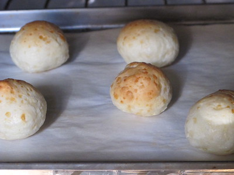
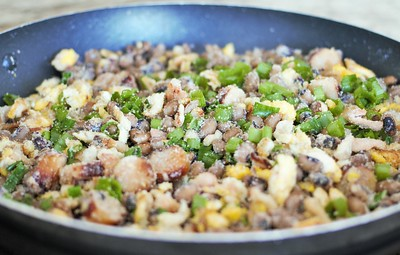

Dentre todas as riquezas de Minas uma das mais marcantes é a culinária, com influências indígenas, africana e europeia surgem
pratos inesquecíveis. Nesta seção vamos trazer alguns pratos típicos de Minas e um pouco da história deles.
Pão de queijo
O pão de queijo se originou em Minas Gerais, segundo uma reportagem G1, o pão de queijo surgiu numa época em que a farinha
era de baixa qualidade, entao utilizava-se o polvilho, e havia abundância de queijo, então a junção do queijo e do polvilho
levou a invenção de uma das receitas mais marcantes de Minas. Segue abaixo uma receita de pão de queijo retirada do site Tudo
Gostoso:
Modo de Preparo
Primeiro, coloque o leite e o óleo em uma panela pra esquentar, desligue o fogo imediatamente assim que começar a ferver (você verá umas bolinhas do leite subindo).
Em uma tigela grande, coloque o polvilho e o sal, e misture bem, logo em seguida, despeje o conteúdo da panela ainda quente, misture bem, primeiro com uma colher e depois com a mão.
Em seguida coloque o queijo ralado e um pouco do queijo do prato e também 1 ovo, continue misturando bem.
Coloque o resto do queijo e verifique se a massa esta com uma textura boa, nem muito oleosa e nem muito seca.
Se você sentir que está muito seca, coloque outro ovo, se ela ficar oleosa, coloque mais um pouco de polvilho.
Essa massa deverá soltar da tigela e também da sua mão.
Experimente a massa e veja se esta boa de sal, algumas pessoas gostam de colocar um pouco mais de sal.
Agora é só fazer bolinhas e colocar na assadeira, deixando um pequeno espaço entre um pão e o outro.
Não é necessário untar a assadeira.
Deixe no forno em temperatura média (230°) até dourar um pouco.

Feijão Tropeiro
O feijão tropeiro é uma receita que vem dos viajantes, chamados tropeiros, que eram responsáveis por trazer o alimento para Minas
na época da exploração do ouro no território. Para se alimentarem durante a longa viagem os tropeiros preparavam um prato que
tinha como base farinha de mandioca, feijão, ovos, cebola e toucinho.Segue abaixo uma receita de pão de queijo retirada do site Tudo de
Gostoso:
Ingredientes (6 porções)
500g de feijão carioquinha cozido
200g de toucinho
1 concha de óleo
1 cebola média picada
4 dentes de alho
5 ovos
1 colher de sopa de sal com alho
Cheiro verde a gosto
200g de farinha de mandioca
Modo de Preparo
Coloque o óleo em uma panela e doure a cebola, acrescente o bacon e frite bem.
Adicione o alho, sal e os ovos, misturando com cuidado para que não se despedacem muito.
Refogue o feijão, baixe o fogo, misture a farinha aos poucos e o cheiro verde.
